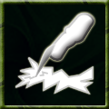

|
 |
Cold Touch The freezing grasp of a monster using the cold touch ability will chill any creature to the bone. This ability inflicts cold damage on its target. Command: coldt?ouch <character> This ability is based on:
Spirits may purchase the cold touch ability for half of the normal karma cost.
Effects of the cold touch ability:
|
Fly | Regenerate | Resonance | Resurrection | Shroud of Mist | Teleport | True Sight | Chain Lightning | Cold-breathing | Cold Touch | Haste | Stun | Fireball | Poison Breath | Fire-breathing | Spit Acid | Raise | Focus | Disease Breath